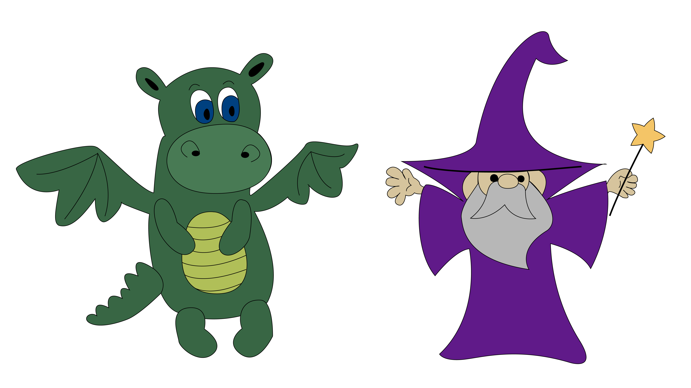
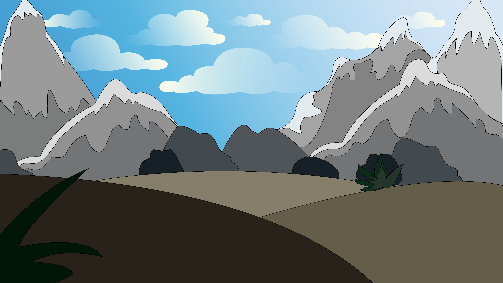
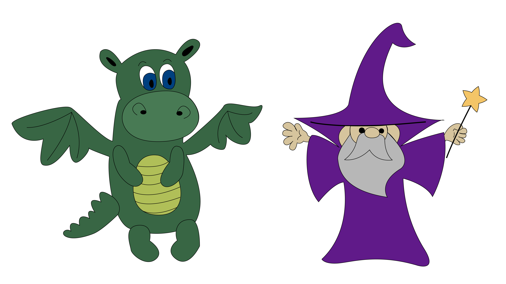
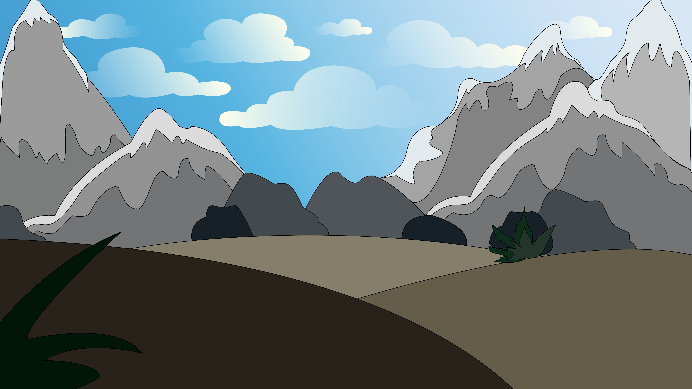

Tema 2 - Animation
Egen animation - Den første flyvetur
Opgaven
Første opgave i forløbet ”Grundlæggende animation” lød på at lave en interaktiv animation. Under forløbet skulle vi b.la. udarbejde en historiestruktur for fortællingen, designe karaktere, opbygge en scene, lave spritesheets, kode keyframes og JavaScript, for gradvist at få opbygget en samlet fortælling. Opgaven var individuel, hvilket selvfølgelig betød at jeg selv stod for design af grafikken og den reelle udvikling og kodning af animationen i HTML, CSS og JavaScripts JQuery.
Løsningen
Et af kravene til den interaktive animation var, at brugeren skulle tage forskellige valg, som ville resultere i forskellige slutninger for historien. Brugerens mission i min fortælling er at hjælpe dragen med at lærer at flyve. Brugeren kan enten vælge at bede troldmanden om hjælp eller øve videre på egen hånd, brugerens valg har betydning for udfaldet af historien.
Nedenunder ses en flowchart for historie-strukturen.
Efter jeg havde lavet flowchart for historien, begyndte jeg at skitsere mine karaktere og scene.
Nedenfor ses skitser af karaktererne efterfulgt af rentegninger lavet i Adobe Illustrator.

 



Da mine karaktere var rentegnende, kunne jeg begynde på at lave sprite sheets. Mine sprite sheets skulle bruges til at få figurene til at bevæge sig, når det blev kodet ind i CSS og JavaScript.
Herunder ses spritesheet for hovedpersonen i min fortælling.